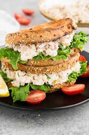

Tuna Sandwich

A tuna sandwich is a classic go-to option for lunch or a quick meal. It typically consists of canned tuna mixed with mayonnaise, and is often seasoned with salt, pepper, and other spices. This mixture is then spread onto two slices of bread, which can be toasted or left as is. Some people like to add additional ingredients such as lettuce, tomato, or cheese to their tuna sandwich for added flavor and texture. Tuna sandwiches are easy to make and can be enjoyed on the go or packed for a lunchtime meal.
Ingredients
- 1 (6.4 oz.) Pouch or 2 (2.6 oz.) Pouches or 2 (5 oz.) Cans - Chunk Light or Albacore White Tuna (if using cans, chunked and drained)
- 1⁄4 cup mayonnaise
- 1 hard cooked egg, chopped
- 2 tsp. lemon juice
- 1⁄2 cup chopped celery
- 2 Tbsp. sweet pickle relish
- 2 tsp. lemon pepper seasoning
- 8 slices bread
Steps
- In a medium bowl, combine all ingredients except bread; mix well. Chill several hours.
- Line 4 slices bread with lettuce; top each with 1⁄4 tuna mixture and top with remaining bread.